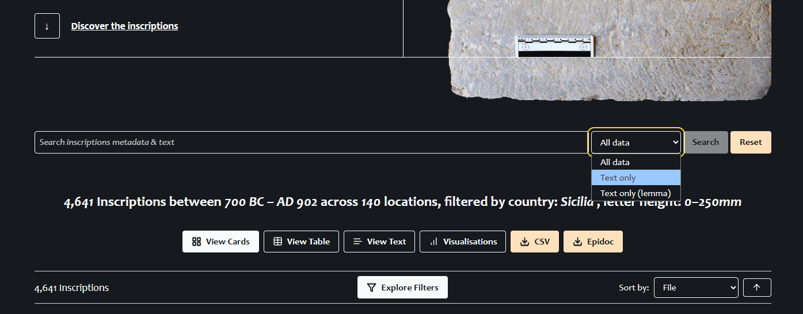
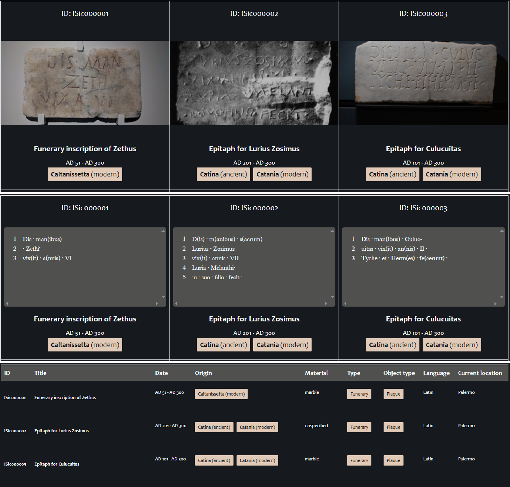
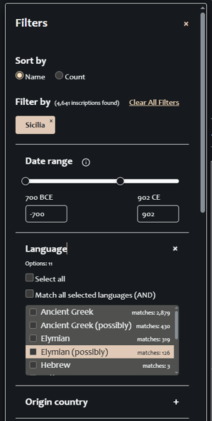
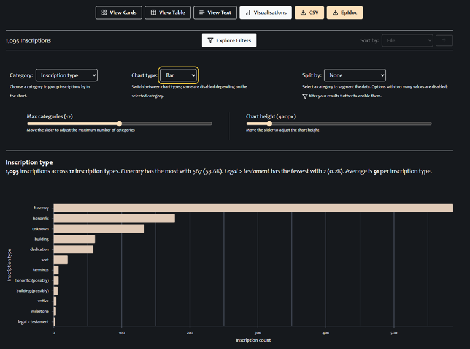

Guide
This page provides some guidance on how to search and use this website. For more detailed information on the overall workflow and the approaches adopted for encoding the data, please see the I.Sicily GitHub wiki. For an overview of the technical solution used to build and present the I.Sicily digital corpus, with links to the source code, see the separate technical overivew. For more general project information see the I.Sicily wordpress site.
Landing page
The landing page presents the main search and display interface: buttons below the initial search bar provide alternative forms of results display, options to download the results, and access to the pop-up filter menu. Two secondary search and display interfaces are available via links at the top right, dedicated to museums and bibliography (both of which can also be searched via the main filter menu). Please note that, by default, the site opens with a filter applied to limit search to material from the island of Sicily, between the years 700 BCE and 902 CE (since the dataset also includes some inscriptions from outside the island, and some post-antique ‘forgeries’). These defaults can be removed in the filter menu (or by pressing the ‘reset’ button to the right of the search bar).
Main search bar

The main search bar (see above) by default offers simple text searching across all the indexed data fields, as well as the inscription texts in the original language (but not the commentary or translation). The drop down menu to the right of the search bar permits this to be refined to search only the original texts, or only the dictionary head-words (lemmata). Please note that this search option has a small degree of ‘fuzziness’ applied, meaning that results err on the side of inclusivity in both the general and the ‘text only’ options (e.g. ‘dis’ will also retrieve ‘d(iebus)’ in the first two options, but only ‘dis’ in the ‘text only (lemma)’ search). Please note also that, currently, lemmatisation has not yet been fully applied across the corpus, so lemma searches will produce incomplete results. Greek text can be entered using any standard unicode greek keyboard, and diacritics are ignored. The search bar offers a quick and simple way to conduct an initial search, whether for a word in the text, a placename, or some other feature; and, if you know the ISic number of your inscription, entering it here (in full) may be the quickest way to find it. However, the main filter menu is the more powerful and accurate search tool.Results display
Whether you search via the search bar or the pop-up filter menu, results are displayed live in the main page. The default view is a ‘card’ view, including a thumbnail image; buttons immediately below the search bar enable this to be changed to a table view, a ‘text’ view (which presents a card view with text rather than image), or a data-visualisation interface. The card, table, and text views (illustrated in the image below) can be re-ordered by various data categories using the drop-down menu at the upper right of the results display. The results can be downloaded using the buttons to the right of the display-options, either as a CSV (containing key metadata fields and the texts for each inscription), or as a zip-file containing the individual EpiDoc files. The URL displayed for your search results is re-usable. Result-views are initially limited to the first 20 (for display, not download), and you have the option at the foot of the page either to load more or to page to the next 20. In any result-view, clicking on the ISic number or inscription title will open the individual inscription page for that record. Below, a comparison of ‘card’ view, text view, and table view displays:

Filter menu
Clicking on the ‘Explore Filters’ button opens up a menu on the left side of the screen containing the full set of available filters for narrowing your search.

By default, country of origin ‘Sicilia’ and a date range of 700 BCE – 902 CE are already applied. Any currently applied filter is displayed at the top of this menu under ‘Filter by’ and can be removed at any point. Basic information about each filter is provided by a roll-over pop-up marked by an (i). Clicking on the + sign will open the individual filter. In some cases the list of sub-categories will be extensive, and can be navigated either by scrolling or by typing in the ‘filter options…’ search bar within the filter. A filter can be applied either by selecting individual items, or conversely by choosing ‘select all’ and then deselecting individual items. Some filters have hierarchical levels, indicated by |__, so, for instance, under ‘materials’, ‘metal’ will retrieve some 300 items, but this can be subdivided into ‘bronze’ and ‘lead’. Certain filters (language and bibliography) include an ‘AND’ option, reducing the result to items that fall into both categories only (so, for example, to retrieve Greek and Latin bilinguals, enable the ‘Match all selected languages (AND)’ option, and then select both ‘Greek’ and ‘Latin’; similarly, to find an inscription present in both CIL and AE, enable the ‘AND’ option in the publication filter before choosing both items). For more information on the encoding principles employed for each category of data, and therefore the exact principles underlying the results which the filters generate, please see the relevant sections of the I.Sicily github wiki. Note that the filter menu can be hidden again at any time (without affecting the results) by clicking on the X at the top right of the menu. To remove all filters, either click on ‘clear all filters’ at the top of the filter menu, or click on the ‘reset’ button to the right of the main search bar.Museums and Bibliography
To search by museum (a catch-all including sites and other types of inscription-holding entities) or publication, two options are available: either in the filter menu or on separate dedicated pages (reached from links at the upper right of the home page). In the filter menu, museums and sites can be found under ‘repository’, and bibliography under ‘publication’. The Museums and Bibliography pages enable dedicated search and display prioritising these categories, and these link through to dedicated pages displaying a (sortable and downloadable) table view of the inscriptions held by an individual museum, or detailed in a particular publication. If you wish to apply further filters to inscriptions in a particular museum or publication, or to apply the data visualisation tools to this subset of material, then you should employ the filter rather than the dedicated pages.
Data visualisation
After applying any search filters, in addition to viewing the results as image cards, table view, or text cards, you can also analyse the results through a set of data visualisation tools (click on ‘visualisations’ among the display options). This will default to a map view of the results, displaying a simple geographical distribution map of the current results. Drop-down menus above the map allow you to choose, from left to right, the primary category by which you wish to group the results, the sort of data visualisation you wish to use (bar chart, donut chart, line graph, histogram, or map), and a further data category by which you can break down the data selected. Note that not all combinations are possible, and that some options will be disabled if the number of distinct values reported is too great; in some cases, the chart will only display, e.g. the top 12 values. The visualisations can be changed dynamically, by reopening the filter menu and applying further filters. In order to display a data distribution over time (using the histogram or line graph), select ‘not after’ as category, and then choose the category to be analysed under ‘split by’. The table of data generated for the data visualisation can be viewed and downloaded by clicking on ‘show data’ below the visualisation (the option to download is then presented below the data table).

Inscription pages
Clicking on any individual inscription in the results display will take you to the dedicated page for the individual inscription, which has a stable URL of the form: https://sicily.classics.ox.ac.uk/inscription/ISic000001 This displays the available images on the left side (which can be expanded to a full page view and are zoomable), and the full edition of the inscription and available information in a scrollable display on the right. Several different renderings of the edition text are available: a standard edited version, using traditional ‘Leiden’ (note, for purists, this necessarily conflates the variations used across Greek and Latin epigraphy); a simplified and fully expanded version of the text with all editorial mark-up suppressed (NB this is an extrapolation from the surviving text); the ‘diplomatic’ edition (i.e. a plain transcription of the letters visible on the stone only, without further interpretation); and a view of the underlying EpiDoc file. The source of the edition is detailed immediately below. The text is followed by translation (where available), a physical description (including detailed petrographic and palaeographic data where available), provenance information, details of the inscription’s current location, date, inscription type, commentary (typically kept to a minimum, and not always present), and bibliography, including both digital and paper editions. Links to external or additional resources are provided where possible, and the bibliographic references link out to other sites and the project’s Zotero bibliography. Citation and editorial information are detailed at the end. For guidance on how to cite these editions, see the How to Cite page.